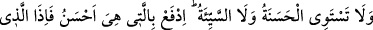
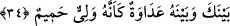

Minârelerin Mekke’de Mescid-i Haram’da o gün için yedi tane oluşu fenâya dâvetin
mertebelerine işarettir. Bunlar da, sonuncusu ‘el-Kahhâr’ olan yedi isimdir. Zîrâ Kâbe
zat-ı ahadiyete işarettir. Yükselme bakımından bunun mertebeleri fenâ mertebeleridir.
Çünkü bakâ ancak nüzûlden sonradır. Bunun için Peygamberimiz (s.a.) Miraç’tan
indikten sonra bakâ mertebesinin gerçekleşmesi için Medine’ye hicret emredilmiştir.
Kâbe’nin sekizinci bir minâresi daha vardır ki bu da bekâ minâresidir. Ancak bu
minâre Kâbe’nin içinde “Kâbe’nin altında gömülü ve gizli olup” yalnız keşif ve
mükâşefe yoluyla bilinir. Diğerleri gibi dış yüzeyde olmaz. Harem’e komşu olarak
Mekke’de ikamet ettiğim zamanlar bu durum bana da keşfen sâbit olmuştur.
Tarih-i Kutbî’de mütâlaa ettiğime göre, ilk zamanlar Mescid-i Haram’ın elli kadar
minâresi vardı. Bu minârelerin bazıları haremde bazıları da Mescid-i Haram’ı
çevreleyen dağların tepelerinde idi. Bütün bunlar vakitleri bildirmek içindi. Bu elli
minâre miraç gecesinde ilk defa elli vakit olarak farz kılınan namazın aslına işarettir.
Allah Teâlâ daha sonra namazı hafifletmiş, nihâyet beş vakit olarak kalmıştır. Her şeyde
Allah’ın bir hikmeti, çok güzel bir maslahatı vardır.
34. İyilikle kötülük bir olmaz. Sen (kötülüğü) en güzel bir şekilde önle. O zaman
seninle arasında düşmanlık bulunan kimse, sanki candan bir dost olur.
“İyilikle kötülük”; iyi hasletle kötü haslet, karşılık görmede ve güzel sonuç elde
etmede “bir olmaz.” Sen müşriklerin eziyet ve cehâletlerine sabreder, onlardan intikam
almaz, onların beyinsizliklerine aldırış etmezsen, dünyada saygıyı, âhirette ise sevâbı
hak etmiş olursun.
Sana bazı düşmanlarından bir takım kötülükler ârız olunca “sen” sana kötülük yapana
iyilik yapmak gibi bir hasletle “(kötülüğü) en güzel bir şekilde önle” Zîrâ bu durum
affetmekten daha güzeldir.
Bu ifâde kul ile Rab arasında cârî olan güzel amelleri beyân mâhiyetindedir.
Peygamberimiz (s.a.) müşriklerin eziyetlerine karşı sabra teşvik edilmekte ve onların
kötülüklerine iyilikle mukabele etmesi emredilmektedir. Burada ikinci nefiy edatı
zâittir. Nefiy burada tekit içindir. Yani iyi hasletle kötü haslet ödülde, karşılık görmede
ve güzel sonuçta bir olmaz, demektir.
Zîrâ sen onların eziyet, işkence, cehâlet ve kabalıklarına sabreder; intikamcı olmaz ve
onların beyinsizliklerine aldırış etmezsen dünyada tâzim, saygı ve hürmet; âhirette ise
sevap ve ödülü hak etmiş olursun. Onların durumu ise tam aksinedir. Öyleyse onların
böyle kötülüklere teşebbüs etmeleri senin bu güzel hasletlere sahip olmana engel
olmasın. İyilik ve kötülük cins ve çeşit olarak tefsir edilirse mânâ şöyledir: Tüm